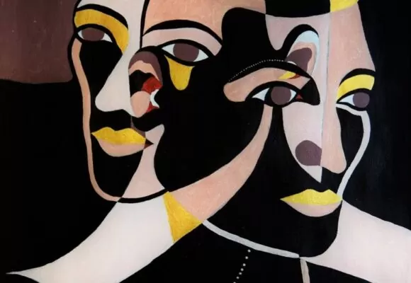

Psychiatrist and psychoanalyst Carl Gustav Jung was one of the most important figures in psychology due to his intense research on...
and a multitide of other important discoveries/ analyses in the fields of psychology, anthropology, and religious studies. Jung studied under another famous psychologist, Freud, but branched off to further his theories on archetypes and symbolism by focusing on dreams and the idea of the collective unconscious, instead of the route that his mentor Freud was taking. Jung's psychotherapy practice has helped people for decades in the process of realizing, understanding, and accepting that their unconscious mind can give insight into the issues that they face in their daily lives, and possibly even have a solution.
Jung used these three main concepts: dream analysis, collective types, and symbols, to both treat psychological disorders and explain the reasoning of these problems. He acheived this through the means of describing symbols through dreams, and then expressing those symbols (in the form of stories, characters, and even numbers) as deeper archetypes of the collective unconscious that every human shares/ has within them. Refer to the table below for some common examples of symbols in dreams and their archetypical interpretations by Jung.
Archetypes & Their Interpretations The Mother The Father The Animus The Anima The ruler of the world of emotions and feelings The ruler over the material, temporal world The collective image of man in a woman's unconscious The collective image of woman in a man's unconscious
Each of these archetypes can be evaluated on a positive and negative basis, and both are equally important when it comes to understanding the patterns in our psyche. Individual unconscious experiences regarding all of these innate archetypes are crucial to the development of our conscious mind, without us even being fully aware of the underlying mechanisms. According to Jung, it takes time to fully be able to recall these archetypes in our dreams, and even more time to develop a true understanding of the role they play in our lives. If we can increase our awareness of these shared experiences and the collective unconscious, the root of some of humanity's flaws might become more evident. Because of the research and dedication of Carl Jung, the human experience seems to be something that is even more interconnected than we may think. Source